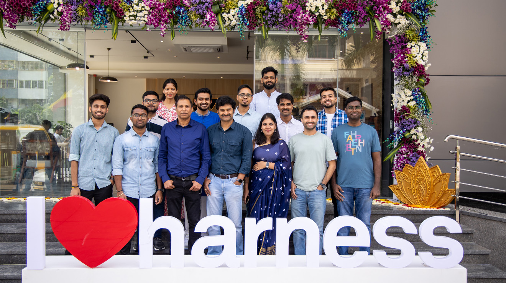
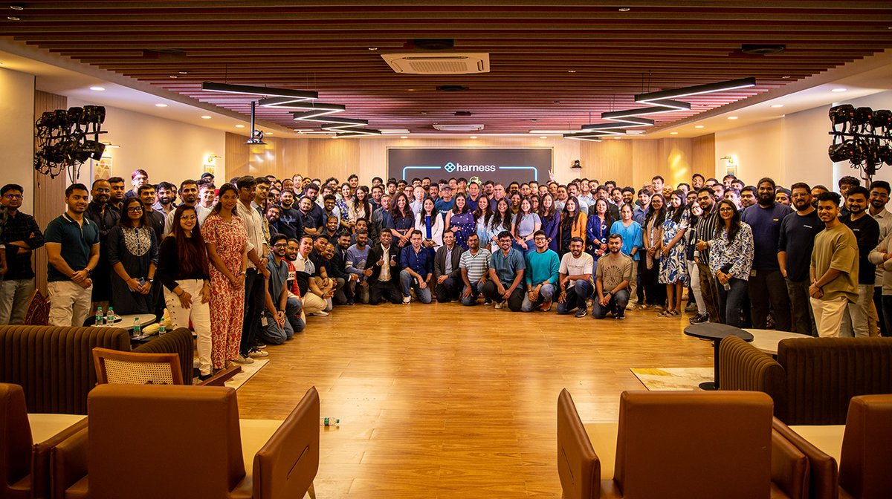
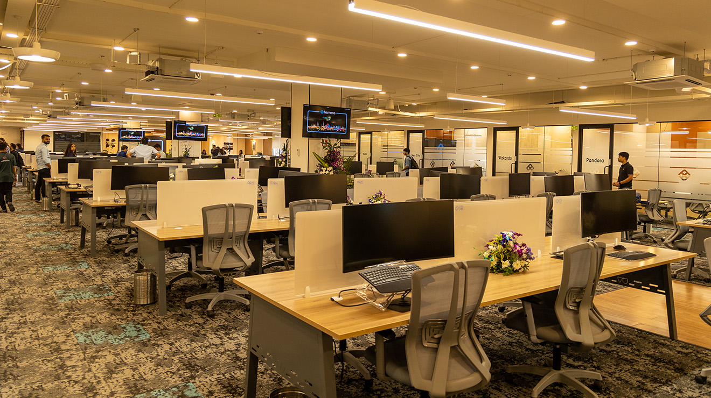

Urban Vault, Garden Layout, Sector 2
HSR Layout, Bengaluru, Karnataka 560102, India



As AI evolves from simple chatbots to autonomous agents, the challenge shifts from monitoring single inferences to observing complex "agentic loops." The AWS Strands SDK simplifies this by using a model-driven approach where LLMs plan and execute tools autonomously. However, in a serverless environment like AWS Lambda, these multi-step loops can become a "black box," leading to unpredictable latencies, soaring token costs, and difficult-to-trace hallucinations. In this session, we demonstrate how to instrument AWS Strands agents using OpenTelemetry (OTel) to gain deep visibility into the "thought process" of your AI. We will explore the integration of the AWS Distro for OpenTelemetry (ADOT) with the Strands SDK to capture granular telemetry across agent cycles, tool calls, and LLM reasoning steps.
Jones is a seasoned developer turned architect who currently at New Relic being an observability advocate working as Senior Developer Relations Engineer and also focuses on infrastructure and development on cloud platforms like AWS and well into the Serverless ecosystem. Jones is also recognised as AWS Serverless Hero who is enabling the community with latest happenings in the Serverless space with his newsletter, blogs and podcast. Along with this, Jones also regularly shares the best of cloud + observability at multiple global forums and conferences.
For years, infrastructure engineering has relied on one core assumption: systems behave deterministically. Given the same inputs, software produces the same outputs, failures are traceable, and operational behavior can be reasoned about through logs, metrics, and alerts. LLM-powered systems challenge that foundation entirely. As language models move beyond chat interfaces into agents, copilots, deployment workflows, automation platforms, and operational tooling, infrastructure is becoming capable of interpretation, reasoning, and autonomous action. Modern systems are no longer just executing instructions — they are generating decisions. This introduces a strange new category of engineering problems. In this talk, we explore how the rise of LLM-native systems is changing the meaning of reliability, observability, and operational trust. Unlike traditional systems, AI-driven platforms can remain technically healthy while producing semantically incorrect behavior. A service may have perfect uptime while making flawed decisions, triggering unintended actions, or confidently generating incorrect outputs. We’ll discuss: Why deterministic engineering assumptions break in AI-native systems The difference between infrastructure failures and semantic failures Reliability challenges introduced by agents and tool-calling workflows Why hallucinations are operational problems, not just model problems The limits of traditional observability for LLM systems Emerging ideas around evaluation, guardrails, and AI reliability engineering What the future role of platform and reliability engineers may look like in increasingly autonomous environments This session is designed for engineers, builders, and operators working with modern AI systems who want to better understand the operational realities of deploying intelligent systems beyond demos and prototypes.
Kaustubha V is a Solution Architect at Microsoft in the Silicon Cloud organization, where she works on scalable cloud platforms, AI-driven systems, automation frameworks, and developer productivity solutions. Her work focuses on building reliable infrastructure and intelligent systems for large-scale engineering workloads across Azure and multi-cloud environments. At Microsoft, she designs solutions that use machine learning to optimize compute resources such as memory, runtime, and CPU requirements. She has contributed to production-grade ML pipelines, telemetry platforms, benchmarking frameworks, and cloud-native automation services that improve operational efficiency and simplify engineering workflows. Kaustubha has strong experience in Azure, AWS, Google Cloud, Kubernetes, distributed systems, and secure cloud deployments. She holds multiple cloud and AI certifications and has earned the Kubestronaut distinction from the Cloud Native Computing Foundation. Beyond her engineering role, Kaustubha is active in AI research and technology communities. Her research interests include generative AI, machine unlearning, responsible AI, and bias mitigation in machine learning systems. She has authored research papers accepted at international workshops and conferences, including NeurIPS,ICCV, GHC ICLR, GHCI, IEEE and leading data science venues. She is also passionate about mentoring and community impact. Through initiatives such as Women Techmakers and Microsoft’s Code Without Barriers, she supports students and early-career professionals in learning cloud computing, AI, and software engineering.
The AI stack is becoming increasingly interconnected. Agents now invoke tools, interact with MCP servers, maintain memory, and coordinate with other agents to complete tasks that were once handled by traditional software systems.
This session examines the new attack surface created by agent ecosystems, tool integrations, memory layers, and autonomous workflows. As AI systems become more interconnected and autonomous, trust extends far beyond code and infrastructure, shaping how agents access tools, retain context, make decisions, and interact with one another. The result is a new set of security and governance challenges that traditional software supply chain models were never designed to address.
From agent frameworks to runtime interactions, this talk provides a security-first view of the emerging AI supply chain and the controls needed to govern it.
Every team I've worked with this year started the same way: someone watched a Cursor demo on a Tuesday, and by Friday they were three weeks into building their own agent framework. By month two, they had a half-finished tool router, a custom retry loop, a memory abstraction nobody understood, and a production incident. I'm an AWS Developer Advocate, and over the last year I've sat with 12 teams shipping agentic systems on Bedrock — from a fintech doing fraud triage to a healthcare team summarizing clinical notes. The teams that shipped on time had one thing in common: they stopped building framework-shaped things and started writing boring, debuggable Python around the Strands SDK. This talk is the contrarian version of "how to build agents." I'll walk through the seven framework anti-patterns I keep seeing (the Tool Registry, the Custom Memory Layer, the Orchestration DSL, and four more), show the production incidents each one caused, and then live-code a multi-tool agent using Strands in under 10 minutes — the same agent two of those 12 teams ended up with after they deleted their framework. You'll leave with: a checklist for spotting "framework drift" in your own codebase, a working Strands agent on GitHub you can fork tonight, and an opinionated answer to "should we build this in LangGraph or Strands or just plain Python?" No slides about the future of AI. No "agentic transformation." Just code, war stories, and the diff between what teams thought they needed and what actually shipped.
Vishal Alhat is a Developer Advocate at AWS, a former AWS Hero, and a HashiCorp Ambassador based in Bengaluru. Over 11 years he's worn most of the hats engineers care about — backend, platform, SRE, security — and now spends his days helping developers ship agentic AI on Bedrock without setting their on-call rotation on fire. He's mentored 5,000+ developers, picked up a Community Builder of the Year award along the way, and has a soft spot for the boring middle of the stack: observability, evals, IaC, and the unglamorous work that keeps production quiet at 3 AM. He writes technical blogs and posts mostly-useful things on social platforms. Recent Talks: AWS re:Invent, AWS Summit India, KCD Sri Lanka, AWS UG Hong Kong meetup.
An AI prototype that looks remarkable in a controlled demo can struggle for months to make it into production. The real challenge begins when that prototype has to operate within the constraints of enterprise systems, data, security, and governance.
This session explores four core pillars of production-grade AI systems: context engineering, evaluations, memory, and security and governance. We'll examine the common pitfalls teams encounter, why they matter, and the practices that make AI systems reliable in production.
Designed for engineering teams building beyond prototypes, this talk provides a practical framework for creating AI systems that are reliable, measurable, secure, and ready for real-world use at scale.
Shubham Jindal is Director of AI Engineering at Harness, where he leads AI initiatives focused on enterprise AI systems and agent-based architectures. Previously, he was a Founding Engineer at Traceable AI and spent nearly three years at AppDynamics working on browser monitoring and web performance technologies. An IIT Delhi Computer Science graduate, Shubham is also an inventor with multiple patents in AI and anomaly detection, and a frequent speaker on AI agents, MCPs, and modern software systems.